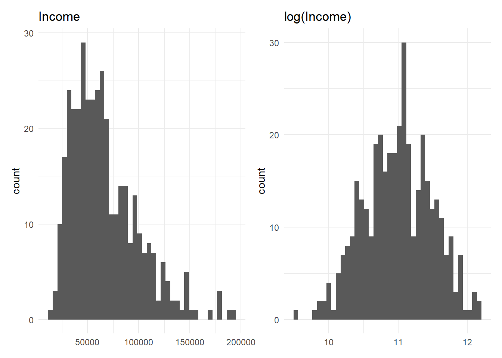
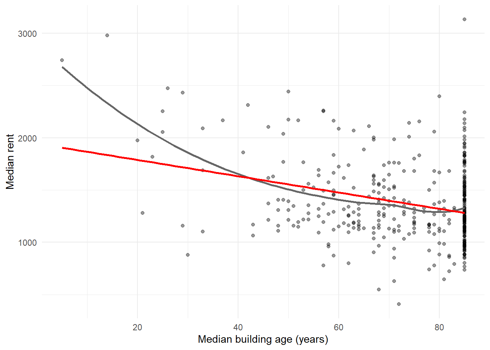
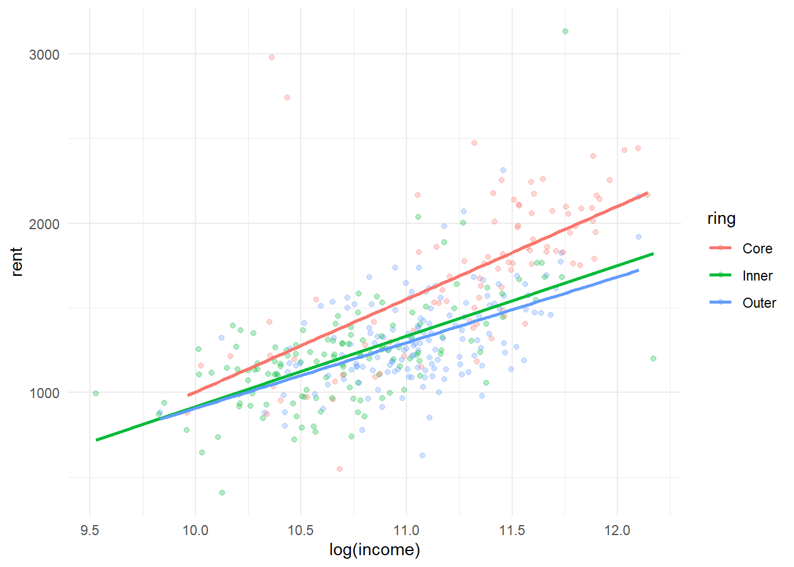
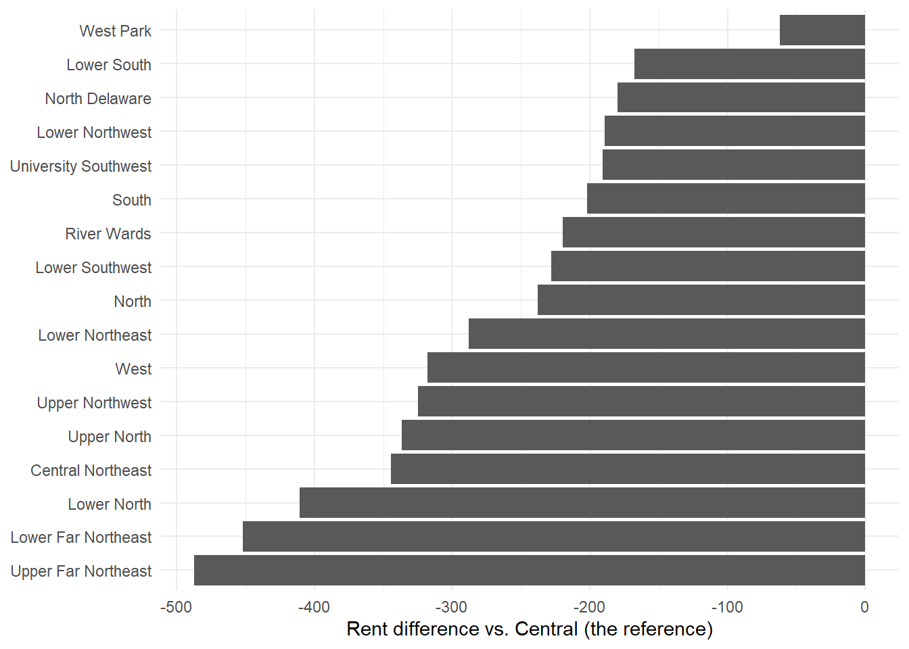
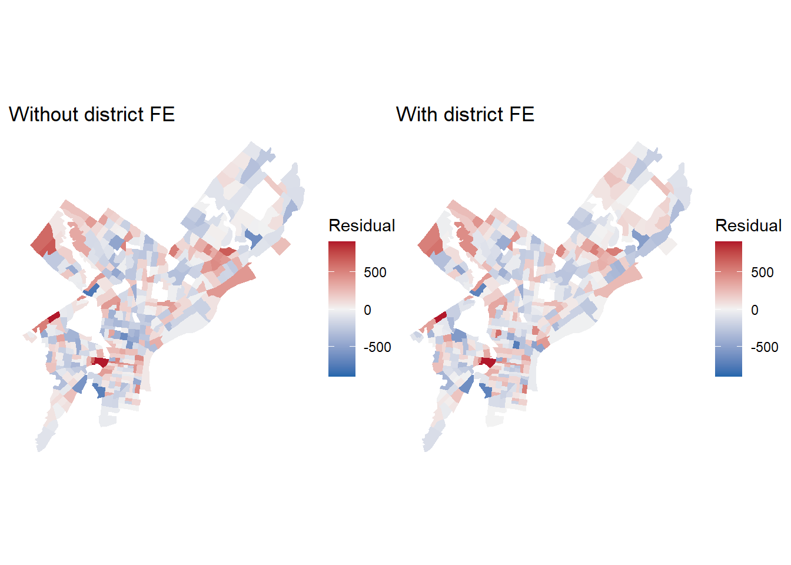

library(tidyverse)
library(tidycensus)
library(sf)
library(patchwork)
options(tigris_use_cache = TRUE)
census_api_key(Sys.getenv("CENSUS_API_KEY"))
tracts_raw <- get_acs(
geography = "tract", state = "PA", county = "Philadelphia",
variables = c(rent = "B25064_001", # median gross rent
income = "B19013_001", # median household income
pop = "B01003_001",
yr_built = "B25035_001", # NEW: median year structure built --> avg age of house
hh_total = "B25003_001",
hh_renter = "B25003_003"),
year = 2023, survey = "acs5", output = "wide", geometry = TRUE, progress = FALSE
) %>%
st_transform(2272) #TRANSFORM INTO FEET SO CAN DO MEASUREMENTSGoal: Create new variables to fit into a linear regression
| New variable | How does it change the y-hat? (The prediction) |
How does it change the beta-hat? (The coefficients) |
|---|---|---|
| Logs | Better fit on skewed data | Reads in percentages, NOT UNITS |
| Squared terms | Line can bend | No meaning for individual coefficients |
| Categories | Captures jumps and non-smooth patterns | Compare coefficient to a reference group |
| Interactions | Slops can differ by group | Effect dependents on which group |
| Fixed effects | Absorbs everything about an unseen place | Identifies WHERE, not WHY |
Important
^all these models are judged by whether the RMSE increases for cross-validation
- NOT p-value
1. Load tidycensus
progress = FALSE helps to remove ugly lines during rendering, when geometry = TRUE
2. Build predictors + drop missing rows
# need to specify CRS so they know the coords are in lat and lng (because it is easier to find)
#st_sfc is to create a spatial feature from a point.
city_hall <- st_sfc(st_point(c(-75.1636, 39.9526)), crs = 4326) %>%
st_transform(2272)
#transform so that it can match the other one
tracts <- tracts_raw %>%
mutate(
rent = rentE,
rent_moe = rentM,
income = incomeE,
bldg_age = 2023 - yr_builtE, # for 2023 ACS daya
pct_renter = 100 * hh_renterE / hh_totalE,
dist_ch_mi = as.numeric(st_distance(geometry, city_hall)) / 5280
#<geometry> pulls location of tracts_raw
) %>%
select(GEOID, rent, rent_moe, income, bldg_age, pct_renter, dist_ch_mi) %>%
filter(!is.na(rent), !is.na(income), !is.na(bldg_age), !is.na(pct_renter))
nrow(tracts)[1] 377^ trying to predict rent (y) using predictors: income, building age, pct_renter, distance from CH
filter(!is.na(__)) to drop all missing rows. If not, during the regression, the models will automatically drop different rows, and the RMSE is no longer comparable.
3. Make a CV helper function
ensure the SAME FOLDS are used for every model –> makes them comparable. By
- setting seed
- keeps all rows consistent for all fold samples
- transform log variable BACK into their units (dollars)
function(formula, data, log_outcome = FALSE)formula= formula for the lm e.g.rent ~ income + pct_rentersdata= the argument to put the datasetlog_outcome = FALSE= determining whether i need to exponentiate the predictors back into real dollar values before computing the RMSE
set.seed(5080)
folds <- sample(rep(1:10, length.out = nrow(tracts)))
cv_rmse <- function(formula, data, log_outcome = FALSE) {
preds <- numeric(nrow(data))
for (k in 1:10) { #all folds get a change
m <- lm(formula, data = data[folds != k, ]) # run lm on everything EXCEPT k
p <- predict(m, newdata = data[folds == k, ]) #predict on test fold
if (log_outcome) p <- exp(p) # back to dollars (more on this soon)
preds[folds == k] <- p
}
sqrt(mean((data$rent - preds)^2))
}4. Set a baseline model + model_log tibble to compare
tibble is a collection of rows
- fit new models
- cross-validate
- add a row to the tibble with the baseline model
f0 <- rent ~ income + pct_renter + bldg_age + dist_ch_mi
m0 <- lm(f0, data = tracts)
model_log <- tibble(model = "m0", added = "baseline",
cv_rmse = cv_rmse(f0, tracts))
model_log# A tibble: 1 × 3
model added cv_rmse
<chr> <chr> <dbl>
1 m0 baseline 265.A) LOGS: For skewed data
A log helps to pull a long tail in –> equal percentage differences become equal distances.
p1 <- ggplot(tracts, aes(income)) + geom_histogram(bins = 40) +
labs(title = "Income", x = NULL) + theme_minimal()
p2 <- ggplot(tracts, aes(log(income))) + geom_histogram(bins = 40) +
labs(title = "log(Income)", x = NULL) + theme_minimal()
p1 + p2
Ok let’s try logging a predictor, income
f_logx <- rent ~ log(income) + pct_renter + bldg_age + dist_ch_mi
m_logx <- lm(f_logx, data = tracts)
b <- coef(m_logx)["log(income)"]
blog(income)
502.1787 ^beta coeff is 502
b / 100 # rent change for a 1% increase in incomelog(income)
5.021787 ^ interpretation: 5.02 rent change for 1% increase in income
b * log(1.10) # rent change for a 10% increase in income (exact)log(income)
47.86274 Reading it: a 1% increase in income goes with about β/100 dollars more rent, holding the other variables constant.
model_log <- model_log %>%
add_row(model = "m1", added = "log(income)", cv_rmse = cv_rmse(f_logx, tracts))
model_log# A tibble: 2 × 3
model added cv_rmse
<chr> <chr> <dbl>
1 m0 baseline 265.
2 m1 log(income) 265.A.1) Managing log(zero) problem
use log1p(x), which is essentially log(x + 1)
Ok let’s try logging the outcome now instead
f_logy <- log(rent) ~ log(income) + pct_renter + bldg_age + dist_ch_mi
m_logy <- lm(f_logy, data = tracts)
coef(m_logy) (Intercept) log(income) pct_renter bldg_age dist_ch_mi
3.5205043462 0.3633422828 0.0005273753 -0.0035283414 -0.0200274106 Reading it:
pct_renter: a 1-unit increase in X goes with about 100·β % change in rentlog(income): log–log, so a 1% increase in income goes with about β % change in rent (an elasticity)
The four combinations
| Model | Formula | Coefficient means… |
|---|---|---|
| level-level | y ~ x | +1 unit of X = +β units of Y |
| level-log | y ~ log(x) | +1 unit of X = +β/100 units of Y |
| log-level | log(y) ~ x | +1 unit of X roughly = 100*β% change in Y |
| log-log | log(y) ~ log(x) | +1 unit of X roughly = +β% change in Y |
The approximation for “roughly =” gets worse as β increases
B) Squared terms: For a bending scatterplot
(For when the gradient changes) (pos and neg)
ggplot(tracts, aes(bldg_age, rent)) +
geom_point(alpha = 0.4) +
geom_smooth(se = FALSE, color = "grey40") + # flexible curve
geom_smooth(method = "lm", se = FALSE, color = "red") + # straight line
labs(x = "Median building age (years)", y = "Median rent") +
theme_minimal()
Often see e.g. in rent against building age.
Note
There is also a pile-up on the right because Census classifies all old buildings (before 1940) as "1939 or earlier" - there is a wall set.
+ Add a squared TERM.
f_sq <- rent ~ log(income) + pct_renter + bldg_age + I(bldg_age^2) + dist_ch_mi
m_sq <- lm(f_sq, data = tracts)
coef(m_sq)[c("bldg_age", "I(bldg_age^2)")] bldg_age I(bldg_age^2)
-28.0044512 0.1823244 I(__) means DO THE MATH
HOW TO READ: The effect of x on y depends on the value of x.
The model is turned into a polynomial (quadratic) regression!
rent ~ log(income) + pct_renter + bldg_age + I(bldg_age^2) + dist_ch_mi
Calculate turning point (for quadratic relationships), -b/2a
b1 <- coef(m_sq)["bldg_age"]
b2 <- coef(m_sq)["I(bldg_age^2)"]
-b1 / (2 * b2) # the turning pointbldg_age
76.79841 NEED TO MAKE SURE IT IS WITHIN OUR DATA RANGE!
range(tracts$bldg_age) # is it inside the data?[1] 5 85If the turning point is outside your data, the curve is just bending, not turning. Don’t tell a story about a turn you never observed.
model_log <- model_log %>%
add_row(model = "m3", added = "+ bldg_age^2", cv_rmse = cv_rmse(f_sq, tracts))
model_log# A tibble: 3 × 3
model added cv_rmse
<chr> <chr> <dbl>
1 m0 baseline 265.
2 m1 log(income) 265.
3 m3 + bldg_age^2 261.Squared terms are dangerous at the edges. A parabola keeps going. If you predict outside the range you trained on, it can produce nonsense. That’s a prediction problem, not just an interpretation problem.
C) Categorical variables
For when
- The variable is categorical (OR binary) (e.g. zoning class, planning district, housing type)
- A number behaves like groups: The relationship jumps instead of sloping smoothly
- Need make our own categories if we notice that a linear relationship is not working for us
- Make using
case_when()orcut()–> Make sure R treats them like afactor(instead of a string)!
case_when(): Write the rules out
tracts <- tracts %>%
mutate(
ring = case_when(
dist_ch_mi < 2 ~ "Core",
dist_ch_mi < 5 ~ "Inner",
TRUE ~ "Outer"
),
ring = factor(ring, levels = c("Core", "Inner", "Outer"))
)
tracts %>% st_drop_geometry() %>% count(ring) ring n
1 Core 94
2 Inner 133
3 Outer 150Last line: Always count no. of observations in each category –> make sure have enough for both test and training dataset, if not won’t generate a coefficient for the category!
cut(): Use for evenly specified bins
tracts <- tracts %>%
mutate(renter_band = cut(pct_renter,
breaks = c(0, 33, 66, 100),
labels = c("Mostly owners", "Mixed", "Mostly renters"),
include.lowest = TRUE))
tracts %>% st_drop_geometry() %>% count(renter_band) renter_band n
1 Mostly owners 88
2 Mixed 210
3 Mostly renters 79Output: Transforms it into a matrix with columns for each category with a binary output.
- For k categories, it creates (k-1) dummy variables and the remaining one is the reference level that is absorbed into the intercept
model.matrix(~ ring, data = st_drop_geometry(tracts)) %>% head(8) (Intercept) ringInner ringOuter
1 1 0 0
2 1 0 0
3 1 0 0
4 1 0 0
5 1 1 0
6 1 1 0
7 1 1 0
8 1 1 0How to read the coefficients?
f_cat <- rent ~ log(income) + pct_renter + bldg_age + I(bldg_age^2) + ring
m_cat <- lm(f_cat, data = tracts)
coef(m_cat)[c("ringInner", "ringOuter")]ringInner ringOuter
-122.2774 -164.1935 Read in comparison to the reference.
ringOuter= how much higher or lower predicted rent is in outer tracts compared to Core tracts, holding the other variables constant.- It is not “the rent in outer tracts.”
How to change the reference level?
Usually you pick the reference you want to write easiest: This is often the (i) largest group, or a (ii) natural baseline
tracts_r <- tracts %>% mutate(ring = relevel(ring, ref = "Outer"))
coef(lm(f_cat, data = tracts_r))[c("ringCore", "ringInner")] ringCore ringInner
164.19351 41.91608 Predictions don’t change at all. Only the comparison changes. Pick the reference that makes the sentence you want to write easiest. Often that’s the largest group or a natural baseline.
Add to model log to see if it helps (only if data is very jumpt)
model_log <- model_log %>%
add_row(model = "m4", added = "ring instead of dist_ch_mi",
cv_rmse = cv_rmse(f_cat, tracts))
model_log# A tibble: 4 × 3
model added cv_rmse
<chr> <chr> <dbl>
1 m0 baseline 265.
2 m1 log(income) 265.
3 m3 + bldg_age^2 261.
4 m4 ring instead of dist_ch_mi 265.D) Interactions: When the slope depends on the group it is in
ggplot(tracts, aes(log(income), rent, color = ring)) +
geom_point(alpha = 0.3) +
geom_smooth(method = "lm", se = FALSE) +
theme_minimal()
Putting an interactions allows the slope to tilt. (Instead of normal plain categorical, which only changes the intercept)
Final fit using log(income) * ring
a * bcreates this interaction effect between log income and the ring categorical variable –> allows the effect of income on rent to differ depending on which ring/zone the tract is ineach interaction will add k-1 more coefficients to estimate from the same tracts –> so use sparingly
f_int <- rent ~ log(income) * ring + pct_renter + bldg_age + I(bldg_age^2)
m_int <- lm(f_int, data = tracts)
coef(m_int)[grep("income", names(coef(m_int)))] log(income) log(income):ringInner log(income):ringOuter
653.6974 -219.1028 -244.4214 model_log <- model_log %>%
add_row(model = "m5", added = "log(income) x ring",
cv_rmse = cv_rmse(f_int, tracts))
model_log# A tibble: 5 × 3
model added cv_rmse
<chr> <chr> <dbl>
1 m0 baseline 265.
2 m1 log(income) 265.
3 m3 + bldg_age^2 261.
4 m4 ring instead of dist_ch_mi 265.
5 m5 log(income) x ring 264.E) Fixed effects
Usually a spatial effect place-specific: a categorical variable
e.g. stuff that we didn’t measure like reputation, school, transit, history
Can use Philly’s 18 planning districts! –> within each district will have some shared intangible effects
- use their district name as categorical variable
districts <- st_read(
"https://services.arcgis.com/fLeGjb7u4uXqeF9q/arcgis/rest/services/Planning_Districts/FeatureServer/0/query?outFields=*&where=1%3D1&f=geojson",
quiet = TRUE
) %>%
st_transform(2272)
names(districts)[1] "objectid" "dist_name" "abbrev" "Shape__Area"
[5] "Shape__Length" "geometry" join tracts with district name
- if the tract intersects with 2, assign with the majority district using
largest = TRUE
- if the tract intersects with 2, assign with the majority district using
tracts <- tracts %>%
st_join(districts %>% select(district = dist_name), largest = TRUE) %>%
mutate(district = factor(district))
tracts %>% st_drop_geometry() %>% count(district, sort = TRUE) district n
1 Central 47
2 Upper North 31
3 North 30
4 South 30
5 Lower North 27
6 Upper Northwest 26
7 West 26
8 University Southwest 21
9 North Delaware 19
10 Lower Northeast 18
11 Lower Northwest 17
12 River Wards 17
13 Central Northeast 16
14 Lower Far Northeast 15
15 Upper Far Northeast 13
16 West Park 13
17 Lower Southwest 10
18 Lower South 1COUNTING will show issues. like e.g. Lower South only has 1 which is not enough observations for regression –> need to fix (later)
E.1) Factoring labels
need to
factor()to order the categories so that the model knows how to order them.UNLESS the districts came coded 1-18, then as long as you wrap it in as.numeric(), the model will understand the order and make different interactions for it
tracts <- tracts %>% mutate(district_num = as.numeric(district))
coef(lm(rent ~ district_num, data = tracts)) (Intercept) district_num
1575.68541 -20.96668 Add fixed effect to model (+ district)
f_fe <- rent ~ log(income) + pct_renter + bldg_age + I(bldg_age^2) + district
m_fe <- lm(f_fe, data = tracts)
coef(m_sq)["log(income)"] # beforelog(income)
519.7439 coef(m_fe)["log(income)"] # afterlog(income)
427.3889 Why did the income coefficient change? Before, it compared tracts across the whole city. Now it compares tracts within the same district. Some of what looked like “income” was really “being in a district where everything is more expensive.”
Will get separate intercept/coeff for each district!
fe_coefs <- tibble(term = names(coef(m_fe)), est = coef(m_fe)) %>%
filter(str_starts(term, "district")) %>%
mutate(term = str_remove(term, "district"))
ggplot(fe_coefs, aes(est, reorder(term, est))) +
geom_col() +
labs(x = paste("Rent difference vs.", levels(tracts$district)[1], "(the reference)"),
y = NULL) +
theme_minimal()
This is the “price of being there,” after income, tenure, and age. It tells you where, not why.
Did it absorb the clusters?
(very slightly)
tracts <- tracts %>%
mutate(resid_before = residuals(m_sq),
resid_fe = residuals(m_fe))
map_resid <- function(var, title) {
ggplot(tracts) +
geom_sf(aes(fill = .data[[var]]), color = NA) +
scale_fill_gradient2(low = "#2166ac", mid = "grey95", high = "#b2182b",
midpoint = 0, limits = c(-900, 900), oob = scales::squish) +
labs(title = title, fill = "Residual") + theme_void()
}
map_resid("resid_before", "Without district FE") + map_resid("resid_fe", "With district FE")
rule of thumb: at least ~10 obs per group for a 10-fold cv
BY: pull small districts into bigger ones, district_cv
identify “
small”, problematic districts where tracts<10flag matching rows
is_smallBEST SOLUTION: merge with neighbouring valid district “
nearest” usingst_nearest_feature()OR: lump small group in “Other” with
fct_lump_min(district, min=10)(quick, but it might become a very random scatter of places)OR, use a courser geography
small <- tracts %>% st_drop_geometry() %>%
count(district) %>% filter(n < 10 | is.na(district)) %>% pull(district)
is_small <- tracts$district %in% small | is.na(tracts$district)
nearest <- st_nearest_feature(tracts[is_small, ], tracts[!is_small, ])
tracts <- tracts %>%
mutate(district_cv = as.character(district))
tracts$district_cv[is_small] <- as.character(tracts$district[!is_small][nearest])
tracts <- tracts %>% mutate(district_cv = factor(district_cv))
tracts %>% st_drop_geometry() %>% count(district_cv) %>% arrange(n) %>% head(5) district_cv n
1 Lower Southwest 10
2 Upper Far Northeast 13
3 West Park 13
4 Lower Far Northeast 15
5 Central Northeast 16check model log
f_fe_cv <- rent ~ log(income) + pct_renter + bldg_age + I(bldg_age^2) + district_cv
model_log <- model_log %>%
add_row(model = "m6", added = "+ district FE (small ones merged with neighbors)",
cv_rmse = cv_rmse(f_fe_cv, tracts))
model_log# A tibble: 6 × 3
model added cv_rmse
<chr> <chr> <dbl>
1 m0 baseline 265.
2 m1 log(income) 265.
3 m3 + bldg_age^2 261.
4 m4 ring instead of dist_ch_mi 265.
5 m5 log(income) x ring 264.
6 m6 + district FE (small ones merged with neighbors) 256.best model yet!! explained a lot of the unexplained
⚠️ The model can’t predict a place it’s never seen
A fixed effect is memorization of a place. If a district never shows up in a training fold, the test fold crashes. This is the most common CV error you’ll hit in A4, where neighborhoods are smaller than districts.
Summary
Fixed effects vs. spatial features
| Fixed effects | Spatial features (Week 4, Oct 16) |
|---|---|
| “Tracts in this district are more expensive” | “Tracts near transit / parks / low crime are more expensive” |
| Captures what you didn’t measure | Only captures what you did measure |
| Can’t predict a new place | Works anywhere you can compute the feature |
| Boundary is someone else’s choice | You choose the scale |
| Tells you where | Tells you why (or at least what) |
They aren’t rivals. FE catch what your features miss, and your features explain what the FE were hiding. On Oct 16 we’ll build features from neighbors (kNN) and watch how much of the district effect they take over.
For Part 5 of your assignment
Plot first. Histogram for skew, scatterplot for bends. Transform because of what you see, not at random.
Try at least one log, one squared term, and one categorical.
If you log your outcome, back-transform before RMSE, or your model log rows aren’t comparable.
For any categorical or fixed effect:
count()the groups before you cross-validate.Write one sentence reading a categorical coefficient that names the reference level.
Questions you should be able to answer
Why does
log(rent)give a “better” RMSE that isn’t really better?A model has
xwith a positive coefficient andI(x^2)with a negative one. What does the relationship look like, and what should you check?ringOuter = -120. Finish the sentence: “Outer tracts are predicted…”Why can’t a fixed-effects model predict rent for a district it never saw?
Why did the income coefficient change when we added district fixed effects?